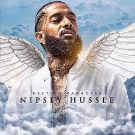

Ermias Joseph Asghedom, AKA Nipsey Hussle (often stylized as Nipsey Hu$$le), was an American rapper, activist, and entrepreneur. Emerging from the West Coast Hip Hop scene in the mid-2000s, Nipsey independently released his first mixtape, Slauson Boy Volume 1, which led to him being signed to Cinematic Music Group and Epic Records. From that point onwards, he released numerous mixtapes, including his Bullets Ain't Got No Name series, The Marathon, The Marathon Continues and Crenshaw. After much delay, his debut studio album Victory Lap was released in 2018 to much critical acclaim and commercial success. Nipsey was also know for his entrepreneurship and philanthropy as he started many endeavors to empower himself and his community as well. On March 31, 2019, Nipsey was fatally shot in his neighborhood outside his clothing store, The Marathon. Nipsey Hussle was one of the smartest and realest rappers of his generation and his life bears many lessons. Here are the top 10 lessons from Nipsey Hussle's life:

10 Things you can learn from Nipsey Hussle's life.10 Things You Can Learn From Nipsey Hussle's Life. Lesson 8 Will Impress You.
1-Make Real Sacrifices2-Surround Yourself With Winners3- Invest In Yourself First4-Always Give Out Opportunity When You Are In A Position Of Power5-Tolerance Is A Trait That Will Get You A Long Way6-Have A Community Behind You7-Diversify8-Think Outside Of The Box9-Provide Value10. Run A Marathon Not A Sprint